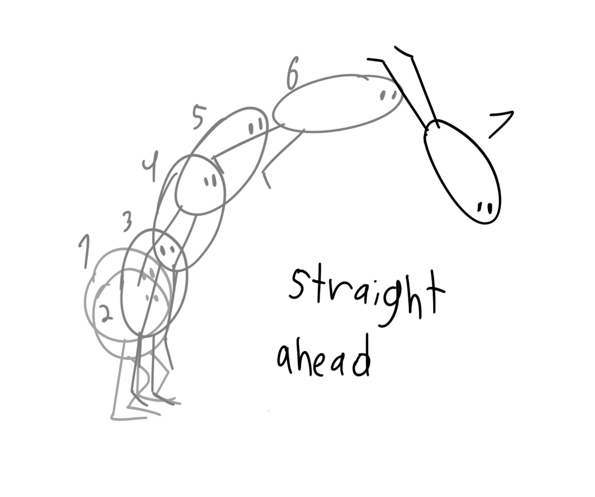
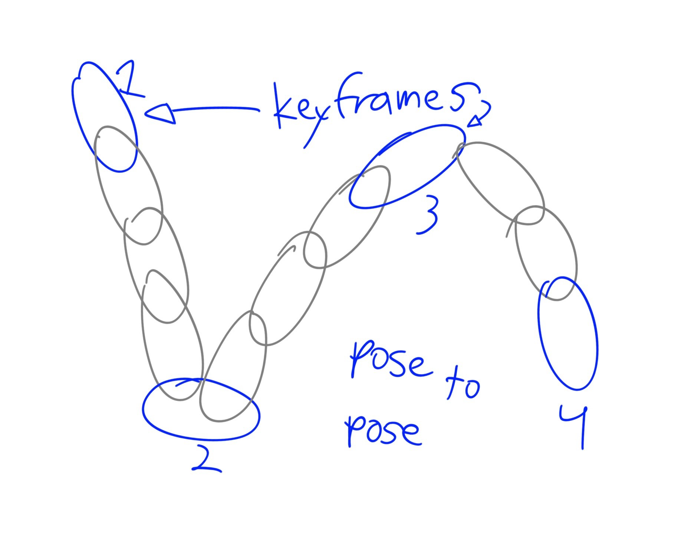
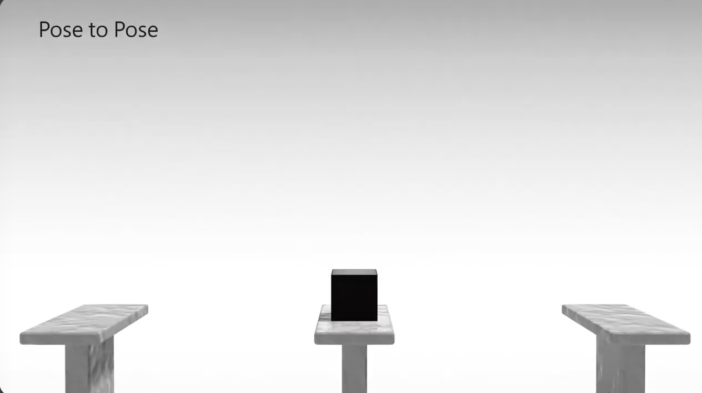

Straight ahead and Pose to Pose
This principle states the two main ways to animate, which are straight ahead and pose to pose Straight ahead consists of making the frames as you go, while pose to pose has you establish keyframes (main frames) and put the rest of the frames between those. Each has its perks and lets you control how you want to position the movement.

The image you see here explains the method of straight ahead, where you draw the first frame, and then the second frame on top, then the third frame, and so on. Straight ahead is great for objects with unpredicable movement such as fire or wind, but if you center on characters with a fixed moveset, it might not be best to go with this method.

This picture shows pose to pose. In this method, you establish the main keyframes of your animation, and then you draw the other frames between them. You can define the start and end of a character's movement, and then set its overall course using pose to pose. This gives you greater control of the position of the frames when your animating things with more defined paths and movement. In fact, you can also use pose to pose to fine tune many details of your animation to make it more realistic.

Click image to see video. In this example, we see the use of the two animation techniques. In the pose to pose, we see a cube that jumps from one platform to another. The path of movement is fixed, so we can picture how the keyframes are positioned, which gives the artist a greater control over the animation. In the straight ahead, we see a swinging pendulum. While the swing obviously moves from left and right, the rope moves at a much random pace, making the swing look more unpredictable. Therefore, using straight ahead is great to achieve that effect, though it is also important to observe real-life movement to achieve the desired effect.